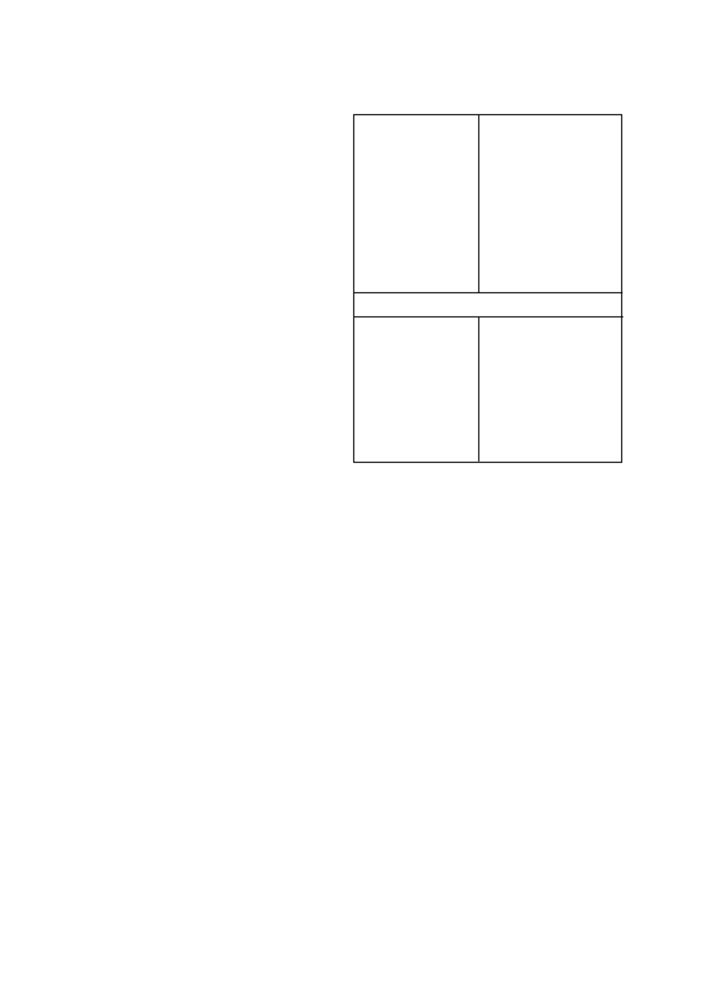

DUAL GOLD
may damage certain crops under the following
conditions:
•
Maize and sweet corn
• Poorly drained soils.
• Soils with a compaction layer.
• Wet and cold conditions directly after an application
•
Inbred parent plants of maize hybrids. Consult a representa-
tive of Syngenta, the distributor or seed supplier.
•
Tobacco
• planted on very sandy and/or gravely soils.
•
Grain sorghum and forage sorghum
• planted on very sandy and/or gravely soils.
• on soils with a high percentage (> 60 %) fine sand and/or
poor structure. These soils are inclined to compact with rain
and are therefore poorly aerated.
• planted deeper than 50 mm.
• on fields with a high incidence of soil borne diseases and/or
where monoculture is practiced.
• planted without the seed treatment CONCEP 960 EC.
•
Dry beans
• on fields with a high incidence of soil borne diseases and/or
where monoculture is practiced.
•
in hot, dry conditions especially in the presence of a com-
paction layer in the soil. Under these conditions beans
might also be susceptible to wind damage.
• on waterlogged, shallow, sandy soils of < 100 mm depth
with an impermeable clay sub soil.
•
Sunflowers
• on waterlogged, shallow, sandy soils of < 100 mm depth
with an impermeable clay sub soil.
Important
Where other herbicides are used in combination with
DUAL
GOLD
the use restrictions as given on the labels of the herbicides
concerned, must be adhered to.
Warning:
Possible damage to triazine sensitive crops
•
Where soils have been treated with lime to correct the soil pH,
the possibility of crop damage increases dramatically in fields
where triazines were previously applied. This is due to the
triazine molecules being replaced on the clay complex with
calcium cations and the triazine thus becoming more available
in the soil-water complex.
•
Only maize should be planted in the season directly after soil
pH adjustment with lime.
•
No triazine sensitive crops should be planted in the season
after the soil pH adjustment has been done with lime. This
applies even if triazines were used at crop rotation rates in
previous years.
•
Triazine sensitive crops include all broadleaf crops e.g. diffe-
rent bean crops, sunflowers and all cereals e.g. wheat.
•
These warnings however do not guarantee that no damage
would be experienced to even the following maize crop as
large volumes of previously applied triazines might now be
available depending on the volume of lime applied and the
rainfall experienced.
Warning: Possible increased efficacy, phytotoxicity and
residual action
•
Increasing the soil pH levels above 7 could produce conditions
for increased efficacy and reduced selectivity. This increased
pH may also result in increased soil residual action by certain
herbicides influencing the choice of following crops especially
under irrigation.
•
In situations where pH adjustments has been done, take care
when sulphonyl urea herbicides, triazolopyrimidine sulfonani-
lide herbicides and imidazolinone herbicides, which are all
sensitive to soil pH fluctuations, have been used or are about
to be used.
Contact your local SYNGENTA representative to discuss
crop rotation and crop protection programmes to follow
before embarking on any pH adjustment programme.
5. WEEDS CONTROLLED
The following weed species are normally controlled by a pre-
emergence application of
DUAL GOLD
at the dosage rates
indicated below:
Brachiaria eruciformis
sweet signal grass
Chloris virgata
feathertop Chloris
Dactyloctenium aegyptium
crowfoot
Digitaria sanguinalis
crab finger-grass
Echinochloa crusgalli
barnyard grass
Eleusine indica
goose grass
Panicum maximum
common buffalo grass
Panicum schinzii
sweet buffalo grass
Pseudobrachiaria deflexa
false signal grass
Setaria pallide-fusca
red bristle grass
Setaria verticillata
sticky bristle grass
Tragus berteronianus
small carrot seed grass
Tragus racemosus
large carrot seed grass
Urochloa mosambicensis
bushveld herringbone grass
Urochloa panicoides
herringbone grass
Control of the following weeds is variable
Amaranthus hybridus
Common pigweed
Amaranthus spinosus
thorny pigweed
Amaranthus thunbergii
red pigweed
Chenopodium carinatum
green goosefoot
Cleome monophylla
spindle pod
Commelina benghalensis
Bengal wandering Jew
Cyperus esculentus
yellow nutsedge
Datura ferox
large thorn apple
Datura stramonium
thorn apple
Galinsoga parviflora
gallant soldier
Nicandra physaloides
Apple of Peru
Portulaca oleracea
purslane
Important
Yellow nutsedge
(Cyperus esculentus)
The suppression of
Cyperus esculentus
can be improved pro-
vided the following conditions are met:
•
Thorough ploughing with a mould board plough immediately
before planting.
•
A fine, even and firm seedbed is prepared.
•
The
DUAL GOLD
application is followed by at least 10 - 20
mm of soft penetrating rain (or irrigation) to leach
DUAL GOLD
into the soil prior to the emergence of
C. esculentus
(normally
7 - 10 days after ploughing). These conditions are more likely
to occur during the latter half of the planting season. More
rain or irrigation is required on heavier soils to obtain good
results. This is the reason for the very poor control sometimes
obtained on turf soils.
•
Rain after the
DUAL GOLD
application but before the
Cyperus esculentus
emergence is imperative for optimal
Cyperus esculentus
control. Therefore
DUAL GOLD
should
be applied directly after the planting process in moist soil.
•
When planting into dry soil (insufficient moisture for
Cyperus
esculentus
germination) application of
DUAL GOLD
should
be timed as close as possible to, but definitely before the first
rains.
Bushveld herringbone grass and herringbone grass
(Urochloa
spp
)
Urochloa species
germinate very shallow and in cases where
no tillage or minimum tillage happen poor control of
Urochloa
species
may be experienced due to this shallow germination and
even germination on the soil surface as well as the lack of seed
incorporation into the soil profile.
6. DIRECTIONS FOR USE
Use only as directed
6.1 COMPATIBILITY
The compatibility of
DUAL GOLD
with other products may be
influenced by the formulation of the products involved as well as
the quality of the water. Since the formulation of other products
may change without the knowledge of Syngenta and the quality
DUAL GOLD
/ 2
